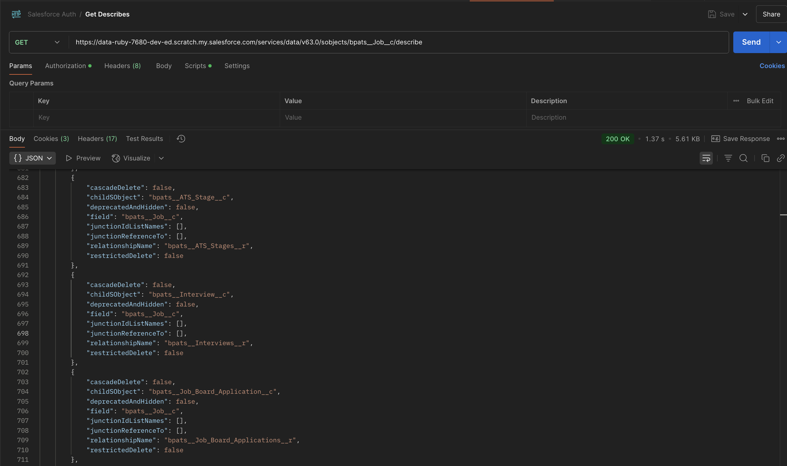
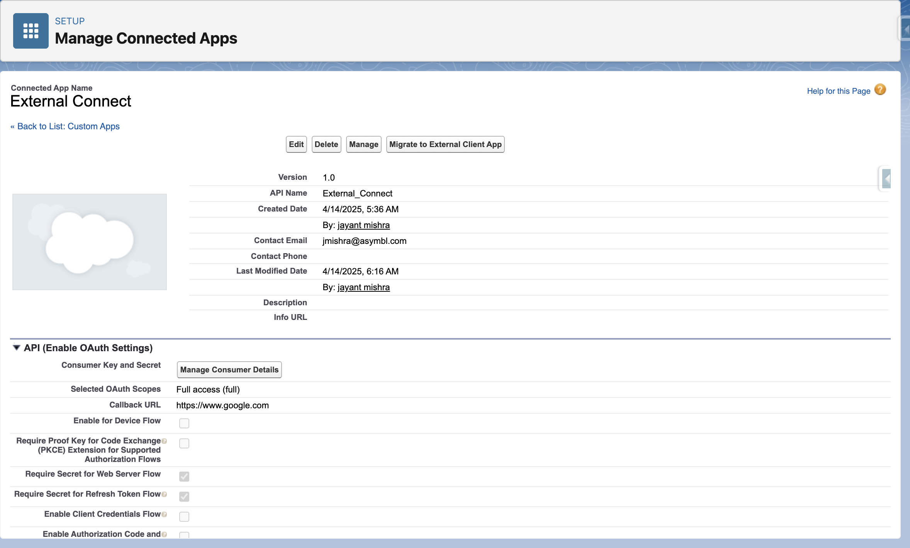
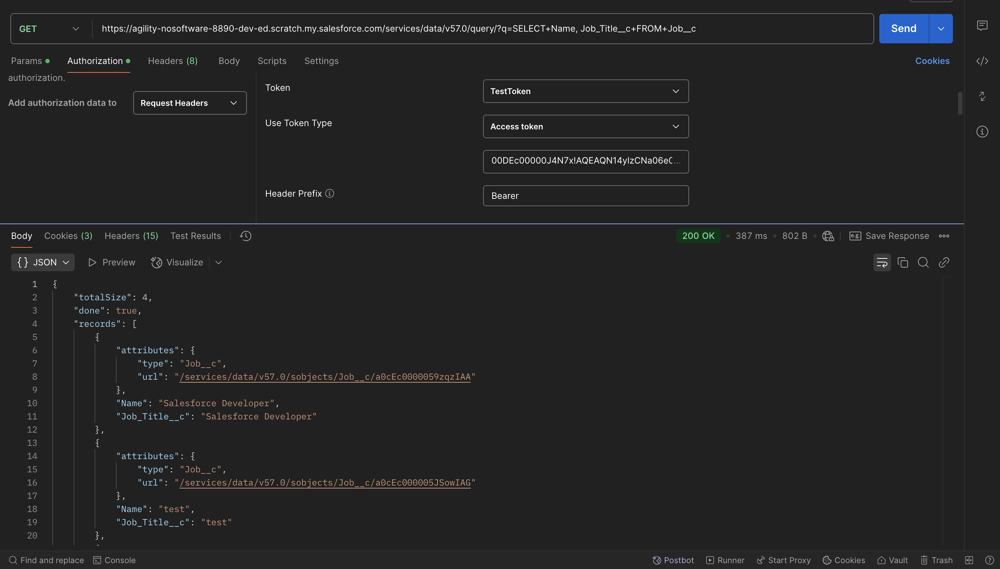

ASM External Integration Guide
Introduction
This reference guide provides general information about each
Applicant Tracking System (ASM) and specific information about
each API operation and supported object type. This document
provides an overview of how external systems can integrate with
our ASM. It includes methods for establishing connections,
retrieving job listings, and submitting job applications through
various integration points.
Objects
In the ATS, the term object refers to a specific type of record
used within the system. Examples of these objects include Job,
Contact, Placement etc. Each object represents a fundamental
concept in ATS, helping to structure how staffing data is
stored, managed, and processed according to the system’s rules
and logic.
Objects:
| Object Name | Object API Name |
|---|---|
| Account | Account |
| ATS Action | bpats__ATS_Action__c |
| ATS Action Link | bpats__ATS_Action_Link__c |
| ATS Applicant | bpats__ATS_Applicant__c |
| ATS Log | bpats__ATS_Log__c |
| ATS Stage | bpats__ATS_Stage__c |
| ATS Stage Tracking | bpats__ATS_Stage_Tracking__c |
| ATS Template | bpats__ATS_Template__c |
| ATS Template Filter | bpats__ATS_Template_Filter__c |
| ATS Template Stage | bpats__ATS_Template_Stage__c |
| ATS Timeline Configuration | bpats__ATS_Timeline_Configuration__c |
| ATS Timeline Child | bpats__ATS_Timeline_Child__c |
| Branch | bpats__Branch__c |
| Contact | Contact |
| Contact List | bpats__Contact_List__c |
| Content Version | ContentVersion |
| Email Message | EmailMessage |
| Interview | bpats__Interview__c |
| Interview Feedback | bpats__Interview_Feedback__c |
| Interview Template | bpats__Interview_Template__c |
| Interview Template Detail | bpats__Interview_Template_Detail__c |
| Interview Topic | bpats__Interview_Topic__c |
| Interview Topic Feedback | bpats__Interview_Topic_Feedback__c |
| Job | bpats__Job__c |
| Job Board Application | bpats__Job_Board_Application__c |
| Message Stats | bpats__Message_Stats__c |
| Offer | bpats__Offer__c |
| Placement | bpats__Placement__c |
| Placement Credit | bpats__Placement_Credit__c |
| Placement Credit Template | bpats__Placement_Credit_Template__c |
| Placement Credit Template Entry | bpats__Placement_Credit_Template_Entry__c |
| Purchase Order | bpats__Purchase_Order__c |
| Work Site Location | bpats__Work_Site_Location__c |
Please follow the link to view the complete data schema of ATS.
The external system can get the object by using the salesforce standard API.
Endpoint:
https://<your-instance>.salesforce.com/services/data/vXX.0/sobjects/<your-object-api-name>/describe

Note:
Before accessing objects through the API, make sure the external system is properly authenticated with your Salesforce org.
JSON
JSON (JavaScript Object Notation) is a lightweight, text-based data format used for storing and exchanging data between systems—especially in web applications. It is easy for humans to read and write, and easy for machines to parse and generate.
Salesforce Versions appendix
In the below examples replace the ‘vXX.0’ placeholder for the version of the Salesforce API you want to use — for example:
- v59.0 = Spring '24 release
- v60.0 = Summer '24 release
- v61.0 = Winter '25 release
Use the latest version your org supports to:
- Access the latest features and field types
- Avoid deprecated functionality
- Improve compatibility with newer Salesforce objects or APIs
API Information
Base URL:
https://<your-instance>.salesforce.com/services/data/vXX.0/sobjects/<your-object-api-name>/describe
- Replace
with your Salesforce domain. - Replace vXX.0 with your Salesforce API version (e.g., v60.0 for Spring '24).
Access Token can be obtained
HTTP method: POST
To authenticate with Salesforce and obtain an access token for API usage, you can use the OAuth 2.0 Password Grant flow. This method is suitable for server-to-server integrations where the credentials are securely stored.
Token Request Endpoint:
https://login.salesforce.com/services/oauth2/token
Required Parameters
| Parameter | Description |
|---|---|
| grant_type | Must be password <password> |
| client_id | Consumer Key from your Connected App |
| client_secret | Consumer Secret from your Connected App |
| username | Salesforce user's username |
| password | Concatenation of user's password and security token (e.g., password123SECURITYTOKEN) |
Example Request:
https://login.salesforce.com/services/oauth2/token?grant_type=password&client_id=YOUR_CLIENT_ID&client_secret=YOUR_C LIENT_SECRET&username=YOUR_USERNAME&password=YOUR_PASSWORD_AND_SECURITY_TOKEN
Successful Response:
JavaScript
{
"access_token": "YOUR_ACCESS_TOKEN",
"instance_url": "https://yourInstance.salesforce.com",
"id": "https://login.salesforce.com/id/ORG_ID/USER_ID",
"token_type": "Bearer",
"issued_at": "TIMESTAMP",
"signature": "SIGNATURE"
}
Common Request Headers
| Header | Type | Required | Example | Description |
|---|---|---|---|---|
| Authorization | String | Yes | Bearer <Access_Token> | OAuth 2.0 Bearer Token |
| Content-Type | String | Yes | application/json | JSON body expected |
| Accept | String | Yes | */* | Expected response content type |
Request Parameters:
| Parameter Location | Name | Type | Required | Example | Description |
|---|---|---|---|---|---|
| Query (URL) | q (for SOQL query) | String | Yes (for query endpoint) | SELECT Name FROM bpats__Job__c | SOQL statement for record fetching |
| Path | Object_API_Name | String | Yes | bpats__Job__c | The Salesforce API name of the object you're targeting |
| Path | recordId | String (18-char Salesforce ID) | Yes (for single record updates/deletes) | a01ABC1234xyz123 | Unique ID of the record |
Request Body (Payload)
The POST, PUT and PATCH requests can have the request body (payload), such as JSON or XML data. In Swagger terms, the request body is called a body parameter. There can be only one body parameter, although the operation may have other parameters (path, query, header).
For POST, PATCH, and Composite endpoints:
- Format: application/json
- Structure: JSON object
- Field Validation Rules:
| Field Property | Rule |
|---|---|
| Data Types | String, Number, Boolean, Array (for composite bulk ops) |
| Maximum Length | Depends on field metadata in Salesforce (commonly 255 characters for text fields) |
| Required Fields | Must be filled if Salesforce marks them as Required in Object Schema |
| Optional Fields | Can be omitted if not mandatory |
| Lookup Fields | Provide 18-digit Salesforce Record ID for references |
Status Codes and Error Responses
HTTP response status codes indicate whether a specific HTTP request has been successfully completed.
| HTTP response code | Description |
|---|---|
| 200 | “OK” success code, for GET, HEAD, and some PATCH requests. |
| 201 | “Created” success code, for POST requests and some PATCH requests. |
| 204 | “No Content” success code, for DELETE requests and some PATCH requests. |
| 300 | The value returned when an external ID exists in more than one record. The response body contains the list of matching records. |
| 304 | The request content hasn’t changed since a specified date and time. The date and time is provided in a If-Modified-Since header. See Get Object Metatdata Changes for an example. |
| 400 | The request couldn’t be understood, usually because the JSON or XML body contains an error. |
| 401 | The session ID or OAuth token used has expired or is invalid. The response body contains the message and errorCode. |
| 403 | The request has been refused. Verify that the logged-in user has appropriate permissions. If the error code is REQUEST_LIMIT_EXCEEDED, you’ve exceeded API request limits in your org. |
| 404 | The requested resource couldn’t be found. Check the URI for errors, and verify that there are no sharing issues. |
| 405 | The method specified in the Request-Line isn’t allowed for the resource specified in the URI. |
| 409 | The request couldn’t be completed due to a conflict with the current state of the resource. Check that the API version is compatible with the resource you’re requesting. |
| 410 | The requested resource has been retired or removed. Delete or update any references to the resource. |
| 412 | The request wasn’t executed because one or more of the preconditions that the client specified in the request headers wasn’t satisfied. For example, the request includes an If-Unmodified-Since header, but the data was modified after the specified date. |
| 414 | The length of the URI exceeds the 16,384-byte limit. |
| 415 | The entity in the request is in a format that’s not supported by the specified method. |
| 420 | Salesforce Edge doesn’t have routing information available for this request host. Contact Salesforce Customer Support. |
| 428 | The request wasn’t executed because it wasn’t conditional. Add one of the Conditional Request Headers, such as If-Match, to the request and resubmit it. |
| 431 | The combined length of the URI and headers exceeds the 16,384-byte limit. |
| 500 | An error has occurred within Lightning Platform, so the request couldn’t be completed. Contact Salesforce Customer Support. |
| 502 | Salesforce Edge wasn’t able to communicate successfully with the Salesforce instance. |
| 503 | The server is unavailable to handle the request. Typically this issue occurs if the server is down for maintenance or is overloaded. |
Response Body Schemas
For successful responses:
| Field | Type | Description |
|---|---|---|
| ID (for POST) | String | The Salesforce ID of the created record. |
| success (for POST/Composite) | Boolean | Indicates if the operation was successful. |
| errors (for POST/Composite) | Array | List of errors, if any. |
| records (for Query) | Array | Array of records matching query criteria. |
Example:
Successful POST Response (Create Record)
JavaScript
{
"hasErrors": false,
"results": [
{
"referenceId": "ref1",
"id": "a0LEm000007fZDxMAM"
},
{
"referenceId": "ref2",
"id": "a0LEm000007fZDyMAM"
}
]
}
Example:
Successful GET Query Response
JavaScript
{
"totalSize": 1,
"done": true,
"records": [
{
"attributes": {
"type": "bpats__Job__c",
"url": "/services/data/v57.0/sobjects/bpats__Job__c/a0MEm000004fFnBMAU"
},
"Name": "Salesforce Developer Test",
"bpats__End_Date__c": null
}
]
}
Error Responses
If something goes wrong, Salesforce returns a standard error format.
| Field | Type | Description |
|---|---|---|
| message | String | Human-readable error message |
| errorCode | String | Salesforce error code |
| fields | Array | List of fields causing the error (optional) |
Example:
400 Bad Request
JavaScript
{
"hasErrors": true,
"results": [
{
"referenceId": "ref3",
"errors": [
{
"statusCode": "REQUIRED_FIELD_MISSING",
"message": "Required fields are missing: [LastName]",
"fields": [
"LastName"
]
}
]
}
]
}
Possible causes:
- Your API request body is missing a required field (in this case, LastName).
- Validation rules on the Salesforce object require this field.
How to Handle:
- Before sending the request, ensure that all mandatory fields are populated.
- Implement client-side or server-side validation to check required fields before making the API call.
Example:
401 Unauthorized (Invalid Token)JavaScript
[
{
"message": "Session expired or invalid",
"errorCode": "INVALID_SESSION_ID"
}
]
Possible Causes:
- The session (OAuth token or session ID) is expired, revoked, or invalid.
- The user was logged out, or the token has timed out.
How to Handle:
- Reauthenticate and obtain a new access token/session ID.
- Implement automatic token refresh logic if using OAuth.
- Check your session timeout settings and ensure sessions are still valid before making requests.
Example:
400 Not Found
JavaScript
[
{
"message": "The requested resource does not exist",
"errorCode": "NOT_FOUND"
}
]
Possible Causes:
- You're trying to access a record, object, or endpoint that doesn't exist.
- You might have a typo in the URL or the record ID provided is wrong.
- The resource might have been deleted.
How to Handle:
- Verify that the URL is correct.
- Ensure the record or resource actually exists before requesting it.
- Implement error handling to gracefully show "resource not found" messages.
Example:
400 REQUIRED FIELD MISSING
JavaScript
{
"hasErrors": true,
"results": [
{
"referenceId": "ref3",
"errors": [
{
"statusCode": "REQUIRED_FIELD_MISSING",
"message": "Required fields are missing: [LastName]",
"fields": [
"LastName"
]
}
]
}
]
}
Possible Causes:
- Your API request body is missing a required field (in this case, LastName).
- Validation rules on the Salesforce object require this field.
How to Handle:
- Before sending the request, ensure that all mandatory fields are populated.
- Implement client-side or server-side validation to check required fields before making the API call.
Example:
404 INVALID_OR_NULL_FOR_RESTRICTED_PICKLIST
JavaScript
[
{
"message": "Status: bad value for restricted picklist field: Test",
"errorCode": "INVALID_OR_NULL_FOR_RESTRICTED_PICKLIST",
"fields": [
"bpats__Status__c"
]
}
]
Possible Causes:
- You're trying to set a picklist field (bpats__Status__c) to a value (Test) that isn't allowed.
- The picklist is restricted, meaning only predefined values are accepted.
How to Handle:
- Fetch the allowed picklist values from Salesforce metadata or manually maintain a list.
- Validate picklist inputs before sending them to the server.
- Show users only valid choices in UI dropdowns.
Example:
400 STRING_TOO_LONG
JavaScript
{
"hasErrors": true,
"results": [
{
"referenceId": "ref3",
"errors": [
{
"statusCode": "STRING_TOO_LONG",
"message": "First Name: data value too large: candidate test candidate test candidate test
candidate test candidate test candidate test candidate test candidate test candidate test
candidate test candidate test candidate test candidate test candidate test candidate test
candidate test candidate test candidate test candidate test candidate test candidate test
candidate test candidate test candidate
test candidate test candidate (max length=40)",
"fields": [
"FirstName"
]
}
]
}
]
}
Possible Causes:
- The value you're trying to insert into the FirstName field exceeds the maximum allowed characters (40 characters in this case).
How to Handle:
- Limit field input length based on Salesforce field metadata (e.g., maxlength in input fields).
- Truncate or validate strings before sending the request.
- Show the user a clear message like "First Name must be 40 characters or fewer."
API Request Limits and Allocations
| Salesforce Edition | API Calls Per License Type Per 24-Hour Period | Total Calls Per 24-Hour Period |
|---|---|---|
| Developer Edition | N/A | 15,000 |
| Enterprise Edition Professional Edition with API access enabled | Salesforce: 1,000 Salesforce Platform: 1,000 Lightning Platform - One App: 200 Customer Community: 0 Customer Community Login: 0 Customer Community Plus: 200 Customer Community Plus Login: 10 External Identity 25,000: 70,000 External Identity 250,000: 750,000 External Identity 1,000,000: 4,000,000 Partner Community: 200 Partner Community Login: 10 Lightning Platform Starter: 200 per member for Enterprise Edition orgs Lightning Platform Plus: 1000 per member for Enterprise Edition orgs |
100,000 + (number of licenses x calls per license type) + purchased API Call Add-Ons |
| Unlimited Edition Performance Edition | Salesforce: 5,000 Salesforce Platform: 5,000 Lightning Platform - One App: 200 Customer Community: 0 Customer Community Login: 0 Customer Community Plus: 200 Customer Community Plus Login: 10 External Identity 25,000: 70,000 External Identity 250,000: 750,000 External Identity 1,000,000: 4,000,000 Partner Community: 200 Partner Community Login: 10 Lightning Platform Starter: 200 per member for Unlimited and Performance Edition orgs Lightning Platform Plus: 5,000 per member for Unlimited and Performance Edition org |
100,000 + (number of licenses x calls per license type) + purchased API Call Add-Ons |
| Full Sandbox | N/A | 5,000,000This limit applies only to Full Sandboxes that aren’t created from a template. For any sandbox created from a template, values in the template determine the limits. For more information, visit Salesforce Help: Sandbox Types and Templates. |
Getting API Limits
HTTP method: GET
You can use the Salesforce Limits API to programmatically retrieve your current API usage and limits.
- Endpoint:
https://
.salesforce.com/services/data/vXX.0/limits - Replace vXX.X with the latest salesforce API version.

Guidelines and Best Practices
- Pagination: The Salesforce REST API returns a maximum of 2,000 records per SOQL query response.
- Only the first 2,000 records are returned in the initial response.
- A nextRecordsUrl field is included to fetch the next batch.
- Filtering: Filtering is done using the WHERE clause in SOQL. You can filter based on field values using logical operators.
- Sorting: Sorting is done using the ORDER BY clause.
- Formatting:
- Date and Time: Use the salesforce standard format
- Numeric Values
- Text String
- Boolean Values
- Asymbl ATS Job Portal Permission Set: This permission set is designed for external-facing portals.
- External Interview Feedback Permission Set: Permission set is designed to submit interview feedback
- Asymbl ATS User Permission Set: This permission set grants users access to nearly all object permissions within the system, including
Read, Create, and Edit capabilities. However, users assigned to this permission set do not have Delete access to any objects. - Asymbl ATS Admin Permission Set: This permission set provides full administrative access within the Asymbl ATS system. Users with this role have Read, Create, Edit, andand Delete permissions across all standard and custom objects
- Create a Connected App in Salesforce:
- Go to Setup > App Manager > New Connected App.
- Define the app name and enable OAuth Settings.
- Generate Client Credentials (Client ID and Client Secret).
- Authenticate using Salesforce OAuth 2.0 flow.
- Use the access token to call Salesforce REST APIs to read/write data.
-
https://<your-instance>.salesforce.com/services/data/vXX.0/query/?q=SELECT+<field-api-name>,+<field-api-name>+FROM+<Object_API_Name>
- Replace <your-instance> with your actual Salesforce domain.
- Replace vXX.0 with your specific version number.
- Replace <Object_API_Name> with the API name of the target Salesforce object.
- SELECT+Name,+bpats__Job_Title__c+FROM+bpats__Job__c is equivalent to the raw SOQL query: SELECT Name, bpats__Job_Title__c FROM bpats__Job__c
- Query for Job Records: SELECT+Name,+bpats__Job_Title__c+FROM+bpats__Job__c
- Query for Job Board Application Records: SELECT+Name,+bpats__Job_c+FROM+bpats__Job_Board_Application__c
- Endpoint:
https://<your-instance>.salesforce.com/services/data/vXX.0/sobjects/<Object_API_Name>
- Replace <your-instance> with your actual Salesforce domain.
- Replace vXX.0 with your specific version number.
- Replace <Object_API_Name> with the API name of the target Salesforce object (e.g., Account, Contact, bpats__Job_Board_Application__c, etc.).
- Object API Name: bpats__Job_Board_Application__c
- Required Fields:
- bpats__Contact__c (Reference to Candidate (e.g., Contact Id))
- bpats__Job__c (Reference to Job (e.g., Job Id))
- bpats__Email__c (Candidate Email)
- bpats__First_Name__c (Candidate First Name)
- bpats__Last_Name__c (Candidate Last Name)
- Endpoint:
https://<your-instance>.salesforce.com/services/data/vXX.0/composite/tree/<Object_API_Name>
- Replace vXX.0 with the appropriate API version (e.g., v60.0).
- Replace <Object_API_Name> with the API name of the object you're creating (e.g., Account, Contact, bpats__Job_Board_Application__c, bpats__Job__c, etc.).
- Object API Name: bpats__Job_Board_Application__c
- Required Fields: You must include all required fields for the target object. These are defined in the object schema
- Endpoint:
https://<your-instance>.salesforce.com/services/data/vXX.0/sobjects/<Object_API_Name>/{recordId} - Replace <your-instance> with your actual Salesforce domain.
- Replace vXX.0 with the appropriate API version (e.g., v60.0).
- Replace <Object_API_Name> with the API name of the object you're creating.
- Replace {recordId} with the Salesforce ID of the record you want to update.
- Object API Name: bpats__Job__c
- Required Fields: You must include all required fields for the target object. These are defined in the object schema
- Endpoint:
https://<your-instance>.salesforce.com/services/data/vXX.0/composite/sobjects
- Replace <your-instance> with your actual Salesforce domain.
- Replace vXX.0 with the appropriate API version (e.g., v60.0).
- Endpoint:
https://<your-instance>.salesforce.com/services/data/vXX.0/sobjects/<Object_API_Name>/{recordId} - Replace <your-instance> with your actual Salesforce domain.
- Replace vXX.0 with the appropriate API version (e.g., v60.0).
- Replace <Object_API_Name> with the API name of the object you're creating
- Replace {recordId} with the Salesforce ID of the record you want to delete.
- Object API Name: bpats__Job_c
- Required Fields: You must include all required fields for the target object. These are defined in the object schema.
- Endpoint:
https://<your-instance>.salesforce.com/services/data/vXX.0/composite/sobjects?ids=<comma-separated-record-ids>&allOrNone=false
- Replace <your-instance> with your actual Salesforce domain.
- Replace vXX.0 with the appropriate API version (e.g., v60.0).
If the query matches more than 2,000 records:
Example usage for retrieving the remaining query results
Endpoint:
https://<your-instance>.salesforce.com/services/data/v63.0/query/0r8xx49yn9SOnOmAAL-2000
Example response body
JavaScript
{
"done" : true,
"totalSize" : 3214,
"records" : [...]
}
| Operator | Description | Example |
|---|---|---|
| = | Equals | status = 'Interview' |
| != | Not equal | status != 'Rejected' |
| > < | Greater than / less than | createdDate > 2024-01-01T00:00:00Z |
| IN | Within a set of values | status IN ('Open', 'Interview') |
| LIKE | Pattern matching (with %) | name LIKE 'John%' |
Example
https://<your-instance>.salesforce.com/services/data/v63.0/query/?q=SELECT+Name,+bpats__End_Date__c,+bpats__Status__c+FROM+bpats__Job__c+WHERE+bpats__Status__c=’Open’
This query filters only Jobs whose status is Open.
| Parameter | Description |
|---|---|
| ORDER BY | Field(s) to sort on |
| ASC | Ascending order (default) |
| DESC | Descending order |
Example
https://&lgt;your-instance>.salesforce.com/services/data/v63.0/query/?q=SELECT+Name,+bpats__End_Date__c+FROM+bpats__Job__c+ORDER+BY+CreatedDate+DESC
This returns the newest Job first.
Example: 2025-04-29T15:45:00Z
When filtering by dates in SOQL, use this format:
When filtering by dates in SOQL, use this format:
https://.salesforce.com/services/data/v57.0/query/?q=SELECT+Name,+bpats__End_Date__c,+bpats__Status__c+FROM+bpats__Job__c+WHERE+CreatedDate<2025-01-01T00:00:00Z
Use plain numbers without any formatting (no commas, no currency symbols).
✅ 10000
❌ 10,000 or $10000
Decimal numbers must use a dot (.) as the decimal separator.
✅ 1234.56
Enclose string values in single quotes when used in SOQL.
Example: WHERE Name = 'John Doe'
Example: WHERE Name = 'John Doe'
Use lowercase true or false
Example:
Example:
JavaScript
{
"isActive": true
}
Permission Set Overview
Object Access & Allowed Operations
| Object | Read | Create | Edit | Delete | View All | Modify All |
|---|---|---|---|---|---|---|
| Job Board Application | ✅ | ✅ | ❌ | ❌ | ❌ | ❌ |
| Job | ✅ | ❌ | ❌ | ❌ | ❌ | ❌ |
Object Access & Allowed Operations
| Object | Read | Create | Edit | Delete | View All | Modify All |
|---|---|---|---|---|---|---|
| Interview Feedback | ✅ | ✅ | ❌ | ❌ | ❌ | ❌ |
| Interview Topic Feedback | ✅ | ✅ | ❌ | ❌ | ❌ | ❌ |
| Interview Topic | ✅ | ✅ | ❌ | ❌ | ❌ | ❌ |
| Interview | ✅ | ✅ | ❌ | ❌ | ❌ | ❌ |
| Interview Template Detail | ✅ | ❌ | ❌ | ❌ | ❌ | ❌ |
| Interview Template | ✅ | ❌ | ❌ | ❌ | ❌ | ❌ |
| Contact | ✅ | ❌ | ❌ | ❌ | ❌ | ❌ |
| Object | Read | Create | Edit | Delete | View All | Modify All |
|---|---|---|---|---|---|---|
| ATS Action Link | ✅ | ❌ | ❌ | ❌ | ❌ | ❌ |
| ATS Action | ✅ | ❌ | ❌ | ❌ | ❌ | ❌ |
| ATS Applicant | ✅ | ✅ | ✅ | ❌ | ❌ | ❌ |
| ATS List Filter | ✅ | ✅ | ✅ | ❌ | ❌ | ❌ |
| ATS Log | ✅ | ✅ | ✅ | ❌ | ❌ | ❌ |
| ATS Stage | ✅ | ✅ | ✅ | ❌ | ❌ | ❌ |
| ATS Template Filter | ✅ | ✅ | ✅ | ❌ | ❌ | ❌ |
| ATS Template Stage | ✅ | ❌ | ❌ | ❌ | ❌ | ❌ |
| ATS Template | ✅ | ❌ | ❌ | ❌ | ❌ | ❌ |
| ATS Timeline Child | ✅ | ✅ | ✅ | ❌ | ❌ | ❌ |
| ATS Timeline Configuration | ✅ | ✅ | ✅ | ❌ | ❌ | ❌ |
| Account | ✅ | ✅ | ✅ | ❌ | ❌ | ❌ |
| Branch | ✅ | ✅ | ✅ | ❌ | ❌ | ❌ |
| Contact | ✅ | ✅ | ✅ | ❌ | ❌ | ❌ |
| Contact List | ✅ | ✅ | ✅ | ❌ | ❌ | ❌ |
| Interview Feedback | ✅ | ✅ | ✅ | ✅ | ✅ | ✅ |
| Interview Template Detail | ✅ | ❌ | ❌ | ❌ | ❌ | ❌ |
| Interview Template | ✅ | ❌ | ❌ | ❌ | ❌ | ❌ |
| Interview Topic Feedback | ✅ | ✅ | ✅ | ❌ | ❌ | ❌ |
| Interview Topic | ✅ | ✅ | ✅ | ❌ | ❌ | ❌ |
| Interview | ✅ | ✅ | ✅ | ❌ | ❌ | ❌ |
| Job Board Application | ✅ | ✅ | ✅ | ❌ | ❌ | ❌ |
| Job | ✅ | ✅ | ✅ | ❌ | ❌ | ❌ |
| Offer | ✅ | ✅ | ✅ | ❌ | ❌ | ❌ |
| Placement Credit Template Entry | ✅ | ✅ | ✅ | ❌ | ❌ | ❌ |
| Placement Credit Template | ✅ | ✅ | ✅ | ❌ | ❌ | ❌ |
| Placement Credit | ✅ | ✅ | ✅ | ❌ | ❌ | ❌ |
| Placement | ✅ | ✅ | ✅ | ❌ | ❌ | ❌ |
| Purchase Order | ✅ | ✅ | ✅ | ❌ | ❌ | ❌ |
| Retained Milestone | ✅ | ✅ | ✅ | ❌ | ❌ | ❌ |
| Work Site Location | ✅ | ✅ | ✅ | ❌ | ❌ | ❌ |
| Object | Read | Create | Edit | Delete | View All | Modify All |
|---|---|---|---|---|---|---|
| ATS Action Link | ✅ | ✅ | ✅ | ✅ | ✅ | ✅ |
| ATS Action | ✅ | ✅ | ✅ | ✅ | ✅ | ✅ |
| ATS Applicant | ✅ | ✅ | ✅ | ✅ | ✅ | ✅ |
| ATS List Filter | ✅ | ✅ | ✅ | ✅ | ✅ | ✅ |
| ATS Log | ✅ | ✅ | ✅ | ✅ | ✅ | ✅ |
| ATS Stage | ✅ | ✅ | ✅ | ✅ | ✅ | ✅ |
| ATS Template Filter | ✅ | ✅ | ✅ | ✅ | ✅ | ✅ |
| ATS_Template Stage | ✅ | ✅ | ✅ | ✅ | ✅ | ✅ |
| ATS Template | ✅ | ✅ | ✅ | ✅ | ✅ | ✅ |
| ATS Timeline Child | ✅ | ✅ | ✅ | ✅ | ✅ | ✅ |
| ATS Timeline Configuration | ✅ | ✅ | ✅ | ✅ | ✅ | ✅ |
| Account | ✅ | ✅ | ✅ | ✅ | ✅ | ✅ |
| Branch | ✅ | ✅ | ✅ | ✅ | ✅ | ✅ |
| Contact | ✅ | ✅ | ✅ | ✅ | ✅ | ✅ |
| Contact List | ✅ | ✅ | ✅ | ✅ | ✅ | ✅ |
| Interview Feedback | ✅ | ✅ | ✅ | ✅ | ✅ | ✅ |
| Interview Template Detail | ✅ | ✅ | ✅ | ✅ | ✅ | ✅ |
| Interview Template | ✅ | ✅ | ✅ | ✅ | ✅ | ✅ |
| Interview Topic Feedback | ✅ | ✅ | ✅ | ✅ | ✅ | ✅ |
| Interview Topic | ✅ | ✅ | ✅ | ✅ | ✅ | ✅ |
| Interview | ✅ | ✅ | ✅ | ✅ | ✅ | ✅ |
| Job Board Application | ✅ | ✅ | ✅ | ✅ | ✅ | ✅ |
Authentication
Authentication in REST APIs is the process of verifying the identity of a client making a request.
It's essential to ensure that only authorized users or systems can access specific resources.
Our ATS is built on Salesforce, which supports secure and scalable integrations via Connected Apps.
Authentication ensures secure communication and helps enforce access control in RESTful services.
Method: Connected App in Salesforce
To connect an external system:
Security Note:
API interactions are performed under the context of the authenticated user. This means access to data and functionality is governed by that user's assigned permissions.
Tip:
Ensure the external system supports OAuth 2.0 and is configured to handle Salesforce-style authentication tokens.

Record Operations
External systems can retrieve and manage records using the various supported Salesforce API methods.
Get Records: Salesforce Standard API – GET Records
HTTP method: GET
The GET request method is used to retrieve data from a server at a specified resource URL. It is one of the most common HTTP methods and is read-only, meaning it does not change or modify any data on the server.
External systems can use the Salesforce REST API to query job records using SOQL.
The query string after q= is a URL-encoded SOQL query. Here's how it works:
Example
Note:
The screenshots below depict examples of integrating the ATS with Postman. These are provided for demonstration purposes to show how API requests

Create Records: Salesforce Standard API
HTTP method: POST
The POST method is used to create new records in Salesforce. This method targets a resource collection (i.e., a Salesforce object)
and adds a new subordinate resource (i.e., a record) to it. External systems can use this method to create records for any custom or standard Salesforce object via the REST API.
Example
Authentication: Via Connected App
Request Body:
JavaScript
{
"Contact__c" : "003Ec00000jUEMbIAK",
"Email__c" : "test@test.com",
"First_Name__c" : "candidate",
"Last_Name__c" : "new",
"Job__c" : "a0cEc000005XLv1TAG"
}
Success Responses:
JavaScript
{
"id": "aObEc000006Chx2IAC"
"success": true,
"errors"
}
Create Records in Bulk: Salesforce Standard API
HTTP method: POST
The Composite Tree API allows external systems to create multiple records in a single API call.
This is especially useful for creating a set of related or independent records efficiently.
The body must include a records array with JSON objects, each representing a record to be created. You can assign a referenceId to each record for easy identification in the response.
Example
Sample JSON Payload:
JavaScript
{
"records": [
{
"attributes" : {"type" : "bpats__Job_Board_Application__c", "referenceId" : "ref1"},
"bpats__Contact__c": "003Em00000cqRQ3IAM",
"bpats__Email__c": "test2@test.com",
"bpats__First_Name__c": "candidate",
"bpats__Last_Name__c": "new 2",
"bpats__Job__c": "a0MEm000004fFnBMAU"
},
{
"attributes" : {"type" : "bpats__Job_Board_Application__c", "referenceId" : "ref2"},
"bpats__Contact__c": "003Em00000cqAXLIA2",
"bpats__Email__c": "test3@test.com",
"bpats__First_Name__c": "candidate",
"bpats__Last_Name__c": "new 3",
"bpats__Job__c": "a0MEm000004fFnBMAU"
}
]
}
JavaScript
{
"hasErrors": false,
"results": [
{
"referenceld": "ref1",
"id": "a0bEc000006CfK6IAK"
},
{
"referenceld": "ref2",
"id": "a0bEc000006C{K7IAK"
}
]
}
Update Single Records: Salesforce Standard API
HTTP method: PATCH
The PATCH request method is used to modify the values of the resource properties. The PATCH method requires a request body.
The body of the request must contain representation of the JSON Patch operations that you want to perform on the resource.
External systems can update records using the standard Salesforce object API.
Example
Request Body
JavaScript
{
"Name" : "Salesforce Developer Test"
"bpats_Job_Title__c" : "Salesforce Developer Test"
}
Update Bulk Records: Salesforce Standard API
HTTP method: PATCH
External systems can update records in Bulk using the Standard Salesforce object API.
Request Body
JavaScript
{
"allOrNone" : false,
"records" : [{
"attributes" : {"type" : "bpats__Job__c"},
"id" : "aOMEm000004fFnBMAU" ,
"Name" : "Salesforce Developer Test",
"bpats__Job_Title__c" : "Salesforce Developer Test"
}，{
"attributes" : {"type" : "bpats__Job__c"},
"id" : "aOMEm000004{HCHMA2" ,
"Name" : "Senior Salesforce Developer Test"
"bpats__Job_Title__c" : "Senior Salesforce Developer Test"
}]
}
Success Response
JavaScript
[
{
"id": "a0MEm000004fFnBMAU",
"success": true,
"errors": []
},
{
"id": "aOMEm000004fHCHMA2" ,
"success": true,
"errors": []
}
]
Delete Records: Salesforce Standard API
HTTP method: DELETE
The DELETE request is used to delete a specific resource from your Salesforce instance.
External systems can delete a specific record from Salesforce by using the Standard Salesforce object API.
Example
Example URL:
https://<your-instance>.salesforce.com/services/data/v63.0/sobjects/bpats__Job__c/a0LEm000007SHNYMA4
Delete Records in Bulk: Salesforce Standard API
HTTP method: DELETE
The DELETE request can also be used to delete multiple records from your Salesforce instance.
External systems can delete records in Bulk from Salesforce by using the Standard Salesforce object API.
Example URL:
https://<your-instance>.salesforce.com/services/data/v63.0/composite/sobjects?ids=a0LEm000007SHNYMA4,a0LEm000007SDD3MAO&allOrNone=false
Success Response
JavaScript
[
{
"id": "a0MEm000004fFnBMAU",
"success": true,
"errors": []
},
{
"id": "aOMEm000004fHCHMA2" ,
"success": true,
"errors": []
}
]